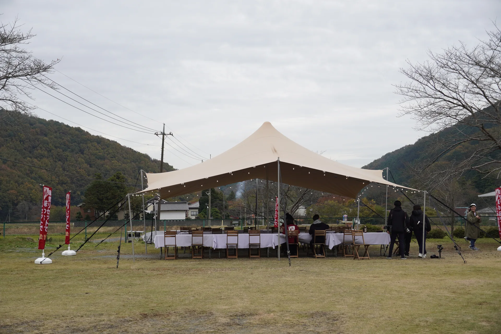

L 10×20m
6人
大型幕体と複数ポールを連携して設営します。

DELIVERY / BUILD / REMOVE
現地条件を確認し、安全な施工計画を作成。テントの搬入、設営、本番後の撤去まで一括対応します。
CREW GUIDE
下記は基本的な設営チームの目安です。搬入距離、地面の状態、設営時間、車両の進入可否などにより増員する場合があります。
大型幕体と複数ポールを連携して設営します。
中規模イベントに適した標準チームです。
小規模会場でも安全確認を分担して施工します。
FLOW
会場図、地面、搬入経路、開催時間を確認します。
専門スタッフが資材を搬入し、安全計画に沿って施工します。
イベント終了後に撤去し、会場を原状回復します。